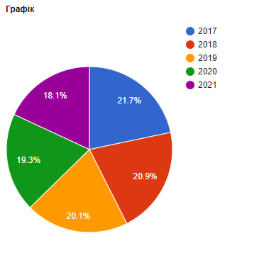

Аналіз показника: Рівень бідності в Україні знижується За останні 5 років в Україні спостерігається тенденція до зниження рівня бідності. У 2021 році частка населення, яке живе за межею бідності, досягла найнижчого значення за останні 5 років - 45,9 %. Динаміка рівня бідності: Мінімальне значення показника за цей період склало 54,7 % (2017 рік). Максимальне значення показника було зафіксовано в 2016 році і склало 58,1 %. Середнє значення показника становить 51,8 %. Ця статистика свідчить про те, що в Україні проводяться ефективні заходи з соціальної політики, спрямовані на зменшення бідності серед населення. Заходи, які вживаються в Україні для підвищення рівня соціальної безпеки: Підвищення рівня заробітної плати: З 2022 року в Україні діє новий Мінімальний прожитковий мінімум, який був підвищений на 10 %. Це допомагає забезпечити більший дохід для робочого населення. Розширення системи соціальних виплат: З 2023 року в Україні буде реалізована програма "Сімейний капітал", яка передбачає виплату 22 200 гривень на кожну дитину від народження до досягнення 3-річного віку. Це сприятиме поліпшенню соціального захисту сімей. Створення нових робочих місць: Уряд України планує активно розвивати економіку та створювати нові робочі місця, щоб забезпечити зайнятість населення. Забезпечення доступу до якісних освітніх і медичних послуг: Удосконалення системи освіти і охорони здоров'я допоможе громадянам отримувати якісні послуги та підвищить їхні шанси на покращення соціального статусу. Забезпечення рівних можливостей: Важливим аспектом є забезпечення рівних можливостей для всіх громадян, незалежно від їхнього соціального статусу. Це передбачає боротьбу з дискримінацією та створення умов для розвитку кожної особи. Висновок: За останні 5 років в Україні спостерігається позитивна тенденція до зниження рівня бідності. Однак для досягнення нуля бідності, необхідно продовжувати роботу в цьому напрямку та впроваджувати соціальні програми, які сприятимуть підвищенню рівня соціальної безпеки громадян.

| № | Рік | Відсоток |
|---|---|---|
| 1 | 2017 | 54,7 % |
| 2 | 2018 | 52,5 % |
| 3 | 2019 | 50,3 % |
| 4 | 2020 | 48,1 % |
| 5 | 2021 | 45,9 % |